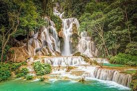

Pacotes de viagens
Bali é uma província da Indonésia e a mais ocidental das Pequenas Ilhas da Sonda. A leste de Java e a oeste de Lombok, a província inclui a ilha de Bali e algumas ilhas menores, principalmente Nusa Penida, Nusa Lembongan e Nusa Ceningan a sudeste.
Luang Prabang, a antiga capital da província de Luang Prabang no norte do Laos, fica num vale, na confluência dos rios Mekong e Nam Khan. Habitada há milhares de anos, foi a capital real do país até 1975. É conhecida por seus muitos templos budistas, como o dourado Wat Xieng Thong, do século 16, e o Wat Mai, que já foi a residência do líder do budismo laosiano
O Taj-Mahal é um mausoléu situado em Agra, na Índia, sendo o mais conhecido dos monumentos do país. Encontra-se classificado pela UNESCO como Patrimônio da Humanidade. Foi anunciado em 2007 como uma das sete maravilhas do mundo moderno.